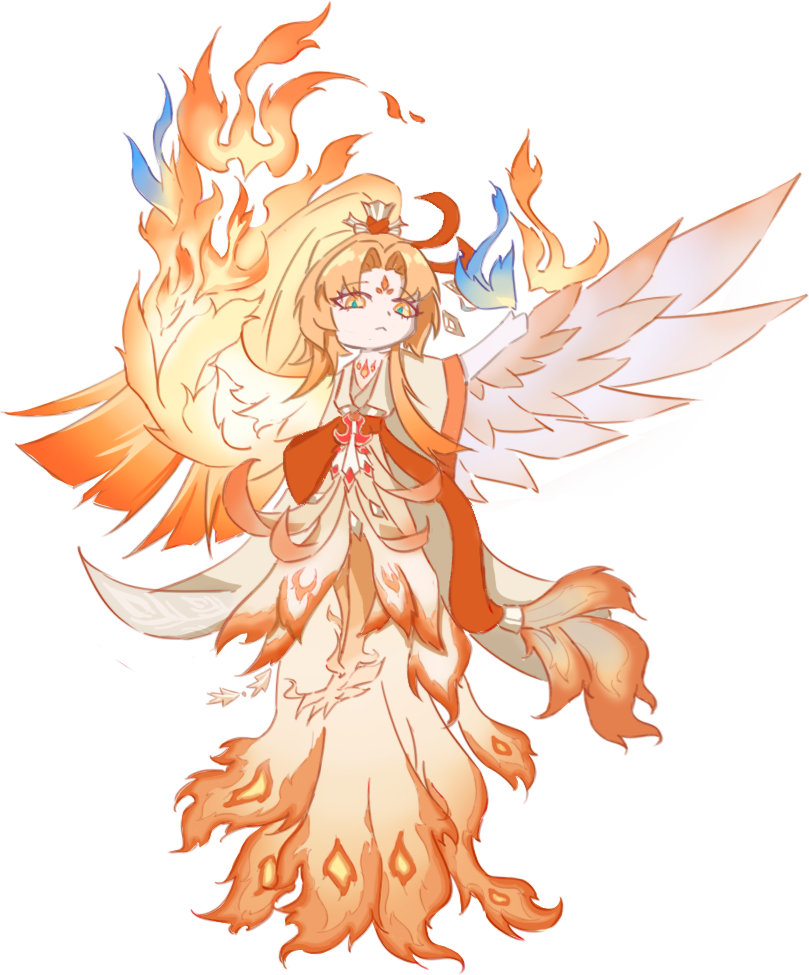

← 返回图鉴
召 唤 阵
· 鼠标在阵中绘制图形 ·
符
咒
式
神
灵
阵
印
契
单 抽
十 连
蓝 票
破碎符咒
清空
开始抽卡

✕
常 驻
自 选
限 时
还没有抽卡记录
自选概率UP
＋
60次召唤内必得
SSR/SP
点击「＋」选择概率UP角色
10%
百羽凤凰火限时UP
60次召唤内必得
SSR/SP
SP百羽凤凰火概率UP
10%
60次后提升至12%
0 抽
选 择 卡 池
选择概率UP角色（SSR / SP）
收起
SP
—
跳 过
再 画 一 次
收 起
再 次 绘 制
收 起
十 连 召 唤
再 次 绘 制
收 起
载 入 中
正在读取角色库与概率配置…
作 者 有 话 说
✕